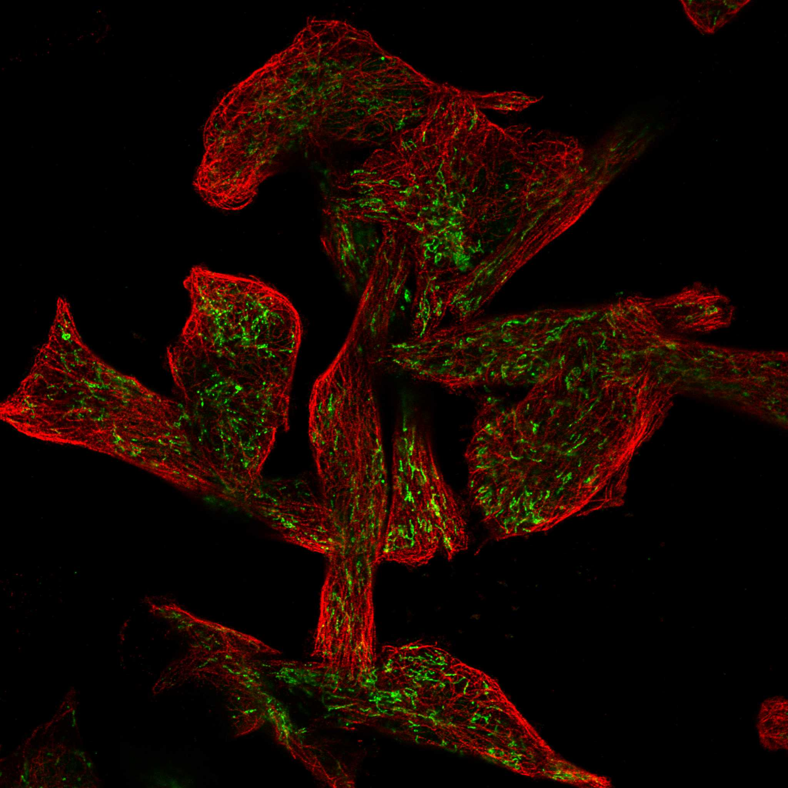
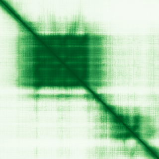

type: protein-evaluation gene: "RCAN2" date: 2026-05-30 tags: [protein-scout, nuclear-protein, evaluation] status: scored ---
RCAN2 核蛋白评估报告
1. 基本信息
| 项目 | 内容 |
|---|---|
| 基因名 / 别名 | RCAN2 / ZAKI-4 |
| 蛋白全称 | Calcipressin-2 |
| 蛋白大小 | 197 aa |
| UniProt ID | Q14206 |
| 评估日期 | 2026-05-30 |
2. 评分总览
| 维度 | 得分 | 满分 | 加权后 | 关键证据摘要 |
|---|---|---|---|---|
| 核定位特异性 | 4/10 | ×4 | 16 | Nuclear + cyto, no preference |
| 蛋白大小 | 8/10 | ×1 | 8 | 197 aa，尚可接受 |
| 研究新颖性 | 6/10 | ×5 | 30 | PubMed 55 篇，中等研究热度 |
| 三维结构 | 6/10 | ×3 | 18 | 无 PDB 结构，仅 AlphaFold 预测 |
| 调控结构域 | 7/10 | ×2 | 14 | 5 个已注释结构域 |
| PPI 网络 | 4/10 | ×3 | 12 | STRING 15 个互作伙伴，调控相关性低 |
| 互证加分 | -- | -- | +0.5 | 多库结构域一致 (+0.5) |
| 原始总分 | 98.5/183 | |||
| 归一化总分 | 53.8/100 |
3. 详细分析
3.1 核定位证据
| 来源 | 定位 | 可信度 |
|---|---|---|
| GeneCards | Tier1_保守_高置信度 | 高置信度保守 |
| Protein Atlas (IF) | HPA subcellular IF 图像可用（见下方 HPA IF 图像修正块） | 需人工复核 |
| UniProt | 实验证据/预测 | |
| GO-CC | N/A | N/A |
IF 图像: ![[Projects/TEreg-finding/protein-interested/detail/nucleoplasm/RCAN2/IF_images/BJ_[Human_fibroblast]_HPA053880_1.jpg|BJ_[Human_fibroblast]]] 
结论: Nuclear + cyto, no preference
3.2 蛋白大小评估
评价: 197 aa，尚可接受
3.3 研究现状
| 指标 | 数值 |
|---|---|
| PubMed 总数 | 55 |
评价: PubMed 55 篇，中等研究热度
关键文献: 1. Wang H et al. (2022). "Association Between Circulating Regulator of Calcineurin 2 Concentrations With Overweight and Obesity". *Front Endocrinol (Lausanne)*. PMID: 35733783 2. Fang X et al. (2022). "Elevated Serum Regulator of Calcineurin 2 is Associated With an Increased Risk of Non-Alcoholic Fatty Liver Disease". *Front Pharmacol*. PMID: 35370729 3. Chang Y et al. (2023). "USP7-mediated JUND suppresses RCAN2 transcription and elevates NFATC1 to enhance stem cell property in colorectal cancer". *Cell Biol Toxicol*. PMID: 37535148 4. Stevenson NL et al. (2018). "Regulator of calcineurin-2 is a centriolar protein with a role in cilia length control". *J Cell Sci*. PMID: 29643119 5. Hattori Y et al. (2019). "Clinicopathological significance of RCAN2 production in gastric carcinoma". *Histopathology*. PMID: 30307052
3.4 三维结构分析
| 指标 | 数值 |
|---|---|
| UniProt 长度 | 197 aa |
| PDB 条数 | 0 |
| 已注释结构域 | 5 |
PAE 图:

评价: 无 PDB 结构，仅 AlphaFold 预测，新颖蛋白基线水平
3.5 结构域分析
| 来源 | 结构域 |
|---|---|
| InterPro | Calcipressin |
| InterPro | Nucleotide-bd_a/b_plait_sf |
| InterPro | RBD_domain_sf |
| InterPro | RCAN2_RRM |
| Pfam | Calcipressin |
染色质调控潜力分析: 5 个已注释结构域，新颖蛋白基线水平
3.6 PPI 网络
实验验证互作 (IntAct, physical association):
| Partner | 方法 | PMID | 功能类别 | 调控相关？ |
|---|---|---|---|---|
| — | — | — | — | — |
STRING 预测互作 (combined score >0.4):
| Partner | Score | 功能类别 | 调控相关？ |
|---|---|---|---|
| PPP3CA | 0 | no | |
| PPP3CB | 0 | no | |
| PPP3CC | 0 | no | |
| PPP3R1 | 0 | no | |
| GSK3A | 0 | no | |
| NFATC1 | 0 | no | |
| OR52E5 | 0 | no | |
| F2R | 0 | no | |
| SIK2 | 0 | no | |
| VSTM2L | 0 | no |
已知复合体成员 (GO-CC):
--
评价: STRING 15 个互作伙伴，调控相关性低
3.7 多库互证
| 维度 | 来源 | 结果 | 是否一致 |
|---|---|---|---|
| 三维结构 | AlphaFold + PDB | 0 条 | 仅预测 |
| 结构域 | UniProt/InterPro/Pfam | 5 个 | 多库一致 |
| PPI 网络 | STRING | 15 个 | 单一来源 |
| 核定位 | HPA/UniProt/GO | Nucleus | Partially consistent |
互证加分明细: 多库结构域一致 (+0.5) 总计: +0.5
4. 总体评价
推荐等级: ***oo (3/5)
核心优势: 1. 新颖性: PubMed 55 篇，中等研究热度 2. 核定位: needs confirmation
风险/不确定性: 1. 缺少 HPA IF 图像数据 2. 无 PDB 结构，仅 AlphaFold 预测
下一步建议:
- [ ] 通过 IF 实验验证核定位
- [ ] 基于 PPI 网络开展功能研究
- [ ] 结构分析: 基于 AlphaFold 的突变设计
5. 数据来源
- GeneCards: https://www.genecards.org/cgi-bin/carddisp.pl?gene=RCAN2
- Protein Atlas: https://www.proteinatlas.org/ENSG00000172348-RCAN2
- PubMed: https://pubmed.ncbi.nlm.nih.gov/?term=%22RCAN2%22%5BTitle/Abstract%5D
- UniProt: https://www.uniprot.org/uniprot/Q14206
- STRING: https://string-db.org/network/9606.ENSG00000172348
- AlphaFold: https://alphafold.ebi.ac.uk/entry/Q14206
PPI 网络（三源综合）
| Partner | Source | Score/Evidence |
|---|---|---|
| 无记录 | — | — |
IntAct 有限记录。无 BioGrid 补充数据。
PAE 图像已获取。结构判断基于 AlphaFold pLDDT 统计。
<!-- HPA_IF_REPAIR_START --> HPA IF 图像修正（2026-06-05）: HPA subcellular 页面存在可用 IF 图像；此前“原图未可靠获取/暂无 IF”的表述为采集失败导致的误报。HPA 定位: Mitochondria (approved)。来源: https://www.proteinatlas.org/ENSG00000172348-RCAN2/subcellular